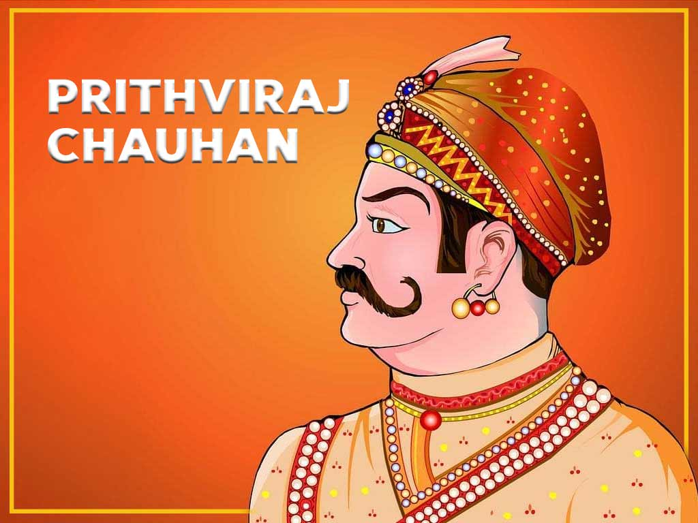
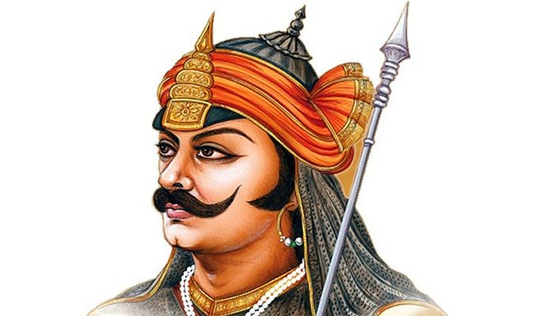
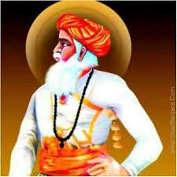
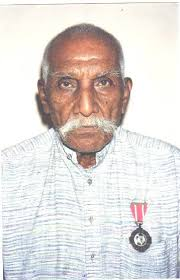

GOR Goddess
1. Meraama Yaadi
2. Tulja Yaadi
3. Manthraal Yaadi
4. Kankali Yaadi
5. Hinglaj Yaadi
6. Dwallagar Yaadi
7. Seethla Yaadi
GOR Sadguru's
1. Hathiram Bavaji
2. Sevalal Maharaj ( Feb-15-1739 to Dec-4-1806 )
3. Ramrao Maharaj ( July-27-1935 to Oct-30-2020 )
GOR Freedom Fighters

Pruthvi Raj Chauhan
c.1166 to 1192CE

Rana Prathap Singh Rathod
May-9-1540 to Jan-19-1597

Lakhisha Banjara
July-4-1580 to June-7-1680

Padmasree Ramsingh Banavath
Aug-15-1906 to June-10-2002
Few Other Leaders
1. Bhukya Baana Nayak
2. Veyraali Lambadi Heeri Mudavath - ( Lady Robinhood ) - ( Jan-14-1888 to Sept-06-2008 )
3. Meetu Bhukya
4. Jatoth Tanu Nayak